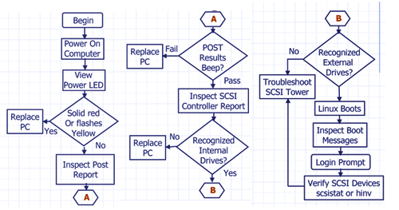

Proprietary to General Electric
Direction 5114043-800, Rev# 9
LightSpeed 3.X Service Methods (Advanced)
Proprietary to General Electric |
| Last Revised: | 20 December 2006 |
| NOTE: | Use HP to load all software except for software related to the DARC. |
The Power LED on the Power On/Off button has the following states:
Solid Green: System on
Solid Yellow: Stand By or Hibernate Mode (not used)
Flashing Yellow or Solid Red: System Error
The hard disk drive activity LED flickers whenever the system is accessing either hard drive.
The network activity LED at the rear of the system on the onboard network port flickers whenever there is network activity (as long as the system is plugged into AC power with power switch on or off).
The Power-On-Self-Test (POST) can detect an error and a change to the configuration. In either case, a code and a short description is displayed.
Press # to see more details about the message. After viewing these details, you are returned to the original POST display screen.
Common POST errors and recommended solutions:
error 0010: The PC configuration has been lost, cleared, corrupted has not been initialized. When the PC remains unplugged for a long period of time, the battery that provides the current to keep the CMOS memory powered may become discharged.
error 0011: When the PC remains unplugged for a long period of time, the battery that provides the current to keep the PC date and time may become discharged.
error 0012: The PC configuration has been cleared or has not been initialized.
error 0031: The microcode update for your processor was not found in the system BIOS. The microcode update corrects some errata inside the processor. When it is not loaded, the processor may function incorrectly, potentially causing data loss or corruption. Your BIOS version is probably too old and does not contain the microcode update suitable for your processor.
error 0100: A key on the keyboard has been pressed during the PC Power-On-Self-Test.
Ensure that nothing was put on the keyboard during boot process and that a key was not accidentally pressed down.
If the error persists, your keyboard may need to be replaced.
error 0101: The keyboard has reported an error during its self test.
Restart the PC.
If the error persists, the keyboard may need to be replaced.
error 0102: The system board self-test has detected a general failure on the integrated keyboard controller. The system board may need to be replaced.
error 0103: The keyboard is not connected.
Check that the keyboard connector is firmly connected
If the problem persists, the keyboard cable may be damaged or the keyboard may not be replaced.
error 0105: The mouse has reported an error during its self-test.
Clean the mouse and its moving ball.
If the problem persists, the mouse may need to be replaced.
error 0106: The mouse is not responding.
Check that the mouse connector is firmly connected.
If the problem persists, the mouse may need to be replaced.
error 0108: The system configuration has detected that the mouse and keyboard connections are inverted.
Turn off the system.
Swap the mouse and the keyboard connections.
When your system starts up, the system firmware performs pre-boot diagnostics to test the hardware configuration for most problems.
If a problem is detected during pre-boot, the system e-buzzer will emit audible beeps and an encoded error message. The e-buzzer emits a different number of beeps for each type of error. The sequence may start with a modem-like sound lasting about three seconds, followed by a number of clear beeps, or the e-buzzer may simply emit clear beeps.
Table 1 shows the Beep Component Error Solutions.
Table 1: Beep Component Error Solutions
| 0 | N/A No problem or power button stuck | Make sure power button is not stuck |
| 1 | Processor failure | Cycle power; if problem persists, replace the FRU |
| 2 | Power supply failure | Cycle power; if problem persists, replace the FRU |
| 3 | Memory failure | Cycle power; if problem persists, replace the FRU |
| 4 | Video graphics card | Cycle power; if problem persists, replace the FRU |
| 5 | PCI Card PnP/PCI card initialization problem | Cycle power; if problem persists, replace the FRU |
| 6 | Corrupted BIOS | Cycle power; if problem persists, replace the FRU |
| 7 | Defective system board | Cycle power; if problem persists, replace the FRU |
LED indications
Reports
Replace PC
SCSI tower parts
Replace faulty drive
Illustration 1: POST

Power switch LED flashes.
PC may beep multiple times.
Report display -
Detailed text with instructions to proceed using function keys.
Detailed error codes or instructions for decoding “beeps”.
If power-up self tests fail, replace the computer.
Follow instructions displayed in report.
Read the summary for controller and drive status.
HINV lists internal drives found.
SCSISTAT lists scan tower devices.
Watch for boot text messages that do not contain [OK] indications.
If your display is blank after you turn on your Workstation, check that:
The Workstation and monitor are turned on. (The power lights should be illuminated.)
Both the Workstation and monitor power cords are firmly connected and plugged in.
The outlet power is functioning.
The monitor is firmly connected to the graphics card connection.
The monitor’s contrast and brightness settings are set correctly.
The Power-on-Self-Test (POST) can detect both an error and a change to the configuration. In either case, a code and short description is displayed. Depending on the message, one or more choices are displayed:
Press <F1> to ignore the message and continue.
Press <F2> to run the Setup program and correct a system configuration error.
Press <Enter> to see more details about the message. After viewing these details, you are returned to the original POST display screen.
If your keyboard does not work as expected:
Ensure that all the keyboard cables are firmly connected.
Ensure the keyboard is connected to the keyboard connector rather than the mouse connector on the rear panel of the Workstation.
Ensure you are using a PS2 keyboard rather than a USB keyboard.
Replace the keyboard with a known working unit to ensure the keyboard itself is not defective.
If the display is blank, refer to Section 2.1.1, “Display is Blank”.
If the display works properly during the Power-on-Self-Test (POST), but goes blank when Windows starts, the display settings in the operating system may not be compatible with your monitor.
If your mouse does not work as expected:
Ensure that the mouse cable is firmly connected.
Ensure that the mouse is connected to the mouse connector rather than the keyboard connector on the rear panel of your Workstation.
Ensure you are using the correct driver. You can download the latest driver from the HP web site (www.hp.com/workstations/support).
Clean the mouse ball with a dry, lint-free cloth if the cursor moves sporadically.
Replace the mouse with a known working unit to ensure the mouse itself is not defective.
| NOTE: | Run e-Diag Tools before contacting the OLC for Help. e-Diag Tools gives you information your OLC engineer needs. |
Use e-Diag Tools to diagnose hardware-related problems on your HP Workstation.
The fields in the run time error serve as road signs for fault isolation and are used as shown here.
Date Time
Suite:Suite name Host:Host name Proc:Process name Error:Error #
(File: File name Method: Method name Line#: Location ID )
Function: Major : Minor Function
Scan/Image Type:Scan/image Type Scan:Scan Specifics Image:Image Specifics
Exception Level: level/flag Ticks: ticks Log Series: #####
--- Message Text Body ---
Click on the pdf icon below for the scalable pdf version of the GOC3 Console Boot-up Flowchart.
Media File 1: GOC3 Console Boot-up Flowchart